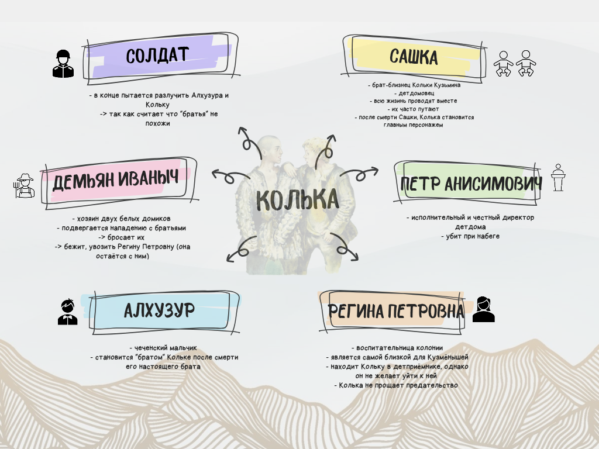

Анализ персонажей
Перед вами наглядная схема взаимоотношений героев повести А. Приставкина, созданная двумя нашими талантливыми ученицами. На карте персонажей использованы различные графические элементы, которые помогают лучше понять систему образов и сюжетные линии романа, а также дают возможность быстро охватить взглядом ключевых персонажей и проследить их взаимодействие в рамках повествования:
